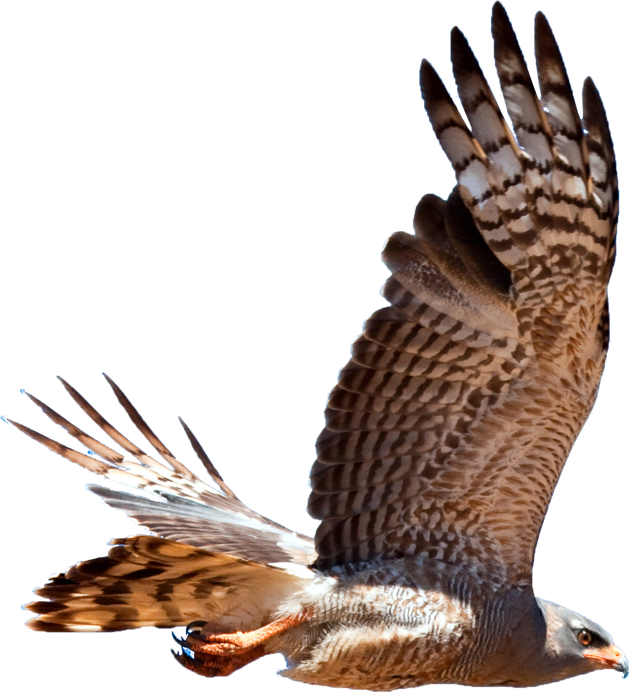

HALCON EN VUELO
Bienvenido a Halcón en Vuelo, un espacio dedicado a la fascinante vida de los halcones. Descubre la majestuosidad y agilidad de estas aves de presa, conocidas por su velocidad y precisión inigualables.
Bienvenido a Halcón en Vuelo, un espacio dedicado a la fascinante vida de los halcones. Descubre la majestuosidad y agilidad de estas aves de presa, conocidas por su velocidad y precisión inigualables.
Los halcones son aves de presa pertenecientes a la familia Falconidae, reconocidas por su velocidad, agilidad y destreza en la caza. Estas impresionantes aves se encuentran en casi todas las regiones del mundo, excepto en la Antártida, y han fascinado a la humanidad durante siglos por su majestuosidad y habilidades.
Los halcones varían en tamaño, desde el pequeño cernícalo, que mide alrededor de 25-35 cm de largo, hasta el halcón gerifalte, que puede alcanzar los 60 cm. Su peso oscila entre 150 gramos y 1.5 kg.
Poseen una vista extremadamente aguda, ocho veces más poderosa que la de un ser humano, lo que les permite detectar presas a grandes distancias.
El halcón peregrino es el animal más rápido del mundo, capaz de alcanzar velocidades de hasta 320 km/h en picada.
Los halcones desempeñan un papel crucial en los ecosistemas como depredadores tope, ayudando a controlar las poblaciones de otras aves y pequeños mamíferos. Esto mantiene el equilibrio ecológico y la salud de sus hábitats.

Aunque muchas especies de halcones están protegidas, algunas aún
enfrentan amenazas debido a la pérdida de hábitat, el uso de
pesticidas y el cambio climático. Es vital continuar los esfuerzos
de conservación para asegurar que estas majestuosas aves sigan
surcando nuestros cielos.
Explorar la vida de los halcones nos ofrece una ventana a la
naturaleza en su forma más pura y poderosa. En Halcón en Vuelo, te
invitamos a aprender más sobre estos increíbles depredadores y su
importancia en el mundo natural.

Los halcones son aves increíblemente adaptables que habitan en una amplia variedad de entornos alrededor del mundo. Desde los desiertos abrasadores hasta las frías tundras, los halcones se encuentran en casi todos los continentes, excepto la Antártida. Esta diversidad en sus hábitats destaca su capacidad para adaptarse y prosperar en distintas condiciones.
Muchas especies de halcones prefieren los bosques densos, donde pueden aprovechar la abundancia de presas y los altos árboles para anidar. El halcón de bosque, por ejemplo, se encuentra comúnmente en estas áreas.

Las áreas montañosas proporcionan un excelente refugio para muchas especies de halcones. Los altos acantilados y las escarpadas formaciones rocosas ofrecen sitios ideales para anidar y vigilar desde arriba. El halcón peregrino es conocido por anidar en acantilados elevados.
Las extensas praderas y sabanas son hábitats ricos en presas pequeñas como roedores y aves. Aquí, los halcones pueden volar a grandes velocidades para capturar a sus presas en terreno abierto.
A pesar de las duras condiciones, algunas especies de halcones han adaptado sus comportamientos para sobrevivir en los desiertos. El halcón lagarto, por ejemplo, se encuentra en regiones áridas y caza principalmente reptiles.
Curiosamente, algunas especies de halcones se han adaptado bien a la vida en las ciudades. Los altos edificios simulan acantilados naturales, y las aves urbanas ofrecen una fuente constante de alimento. El halcón peregrino es un ejemplo notable de halcón que se ha establecido en entornos urbanos.
La conservación de los hábitats naturales de los halcones es crucial
para su supervivencia. La deforestación, la urbanización y el cambio
climático están afectando gravemente sus entornos. Es vital proteger
estos hábitats y promover prácticas sostenibles para asegurar que
los halcones continúen prosperando.
En Halcón en Vuelo,
te invitamos a aprender más sobre los diversos hábitats de los
halcones y a descubrir cómo podemos contribuir a la conservación de
estos magníficos cazadores. Explorando sus hogares naturales,
podemos apreciar aún más la adaptabilidad y resiliencia de estas
majestuosas aves.
Los halcones son aves de presa conocidas por su dieta carnívora y sus habilidades excepcionales para cazar. Su alimentación varía dependiendo de la especie, el hábitat y la disponibilidad de presas. A continuación, exploramos en detalle la dieta de estas impresionantes aves.
La mayoría de los halcones se alimentan principalmente de otras aves. El halcón peregrino, por ejemplo, caza aves pequeñas y medianas, como palomas, patos y estorninos, capturándolas en pleno vuelo con su velocidad y agilidad asombrosas.
Algunos halcones, como el cernícalo común, cazan pequeños mamíferos como ratones, ratas, conejos y ardillas. Utilizan su aguda vista para detectar movimientos en el suelo desde grandes alturas.
En particular, las especies más pequeñas de halcones, como el halconcito común, se alimentan de una variedad de insectos, incluyendo saltamontes, escarabajos y libélulas.
En regiones más cálidas, algunos halcones cazan reptiles y anfibios. El halcón lagartijero, por ejemplo, se especializa en cazar lagartijas y serpientes pequeñas en los desiertos y zonas áridas.
Los halcones juegan un papel crucial en el control de poblaciones de
aves y pequeños mamíferos, manteniendo el equilibrio en sus
ecosistemas. Su presencia indica un ambiente saludable y bien
equilibrado.
En Halcón en Vuelo, te invitamos a profundizar en la fascinante
dieta de los halcones y a entender mejor las técnicas de caza que
los convierten en algunos de los depredadores más eficientes del
reino animal. Descubre cómo su alimentación refleja su adaptabilidad
y la importancia de su conservación en la naturaleza.